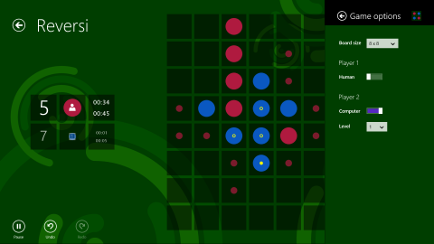

The Reversi sample shows how to combine several Windows Store app features using XAML and C#. It also shows how a C# app can use C++ for performance-sensitive calculations. Finally, it shows how the
Model-View-ViewModel (MVVM) pattern and unit testing can make it easier to manage the development of an app with growing complexity.
The Reversi sample uses XAML and C# for the main app, and includes both C# and C++ versions of the game engine. We created the C# version first, along with its unit tests. Later, we ported the C# code to C++ to get a performance boost, taking full advantage
of the existing unit tests to make development faster. For info on the creation of the C++ version, see
Learn about the Reversi C++ game engine.

The Reversi sample shows you:
- Windows Store app features, including:
- The use of the
Common classes generated by the Visual Studio app templates to support:
- Data binding
- App navigation
- App lifecycle management (suspend, terminate, and resume)
- XAML and C# features, including:
Changes in the 2/19/2014 release:
- Added support for Windows 8.1.
- Added support for roaming the app settings.
- Various small bug fixes and improvements to code comments and general readability.
Changes in the 5/21/2015 release:
Feedback welcome!
If you find this material valuable, please rate the sample and accompanying topics, and recommend it to your friends and colleagues. If you would like to see additional coverage for specific areas, or you have any other suggestions, questions, comments,
feedback, or bug reports, please use the Q and A tab on this page.
To obtain an evaluation copy of Windows 8.1, go to
Windows 8.1.
Related topics
- Roadmaps
- Roadmap for Windows Store apps using C# or Visual Basic
- Samples
- Windows 8.1 app samples
- Concepts
- Reversi, a Windows Store game in XAML, C#, and C++
- Use the Model-View-ViewModel (MVVM) pattern
- Learn how the Reversi sample uses Windows Store app features
- Understand the Reversi app structure
- Learn about the Reversi C++ game engine
Operating system requirements
| Client |
Windows 8.1 |
| Server |
Windows Server 2012 R2 |
Build the sample
- Start Visual Studio 2013 and select File > Open >
Project/Solution.
- Go to the directory in which you unzipped the sample. Go to the directory named for the sample, and double-click the Visual Studio 2013 Solution (.sln) file.
- Press F7 or use Build > Build Solution to build the sample.
Run the sample
To debug the app and then run it, press F5 or use Debug >
Start Debugging. To run the app without debugging, press Ctrl+F5 or use
Debug > Start Without Debugging.